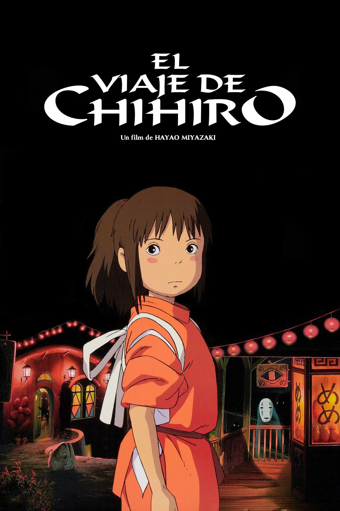
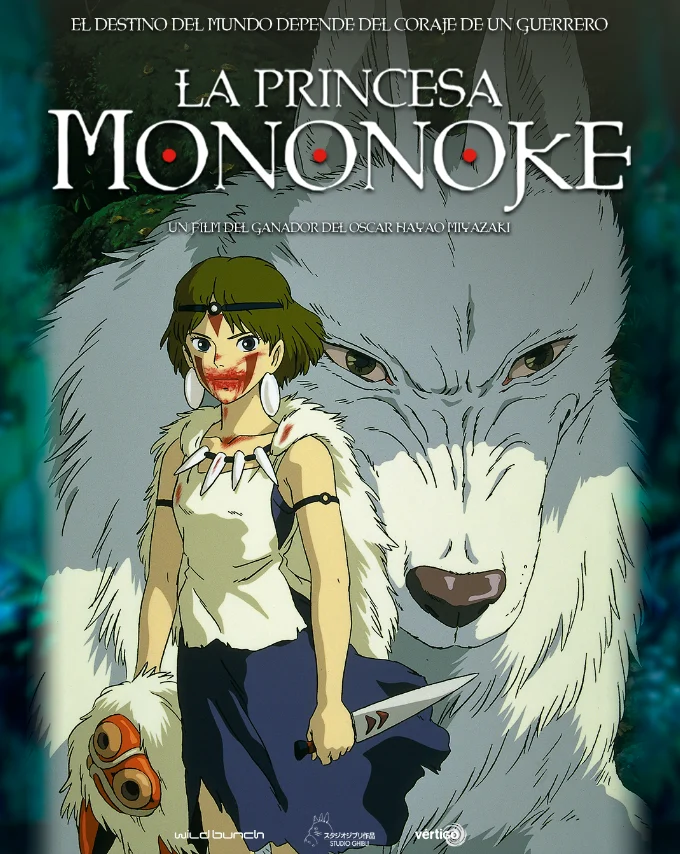
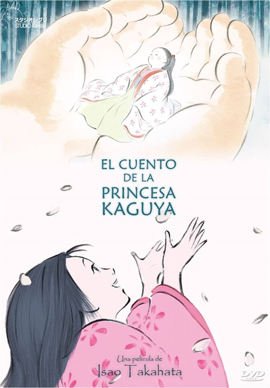

El viaje de Chihiro
Chihiro es una niña de diez años que, durante una mudanza, se adentra con sus padres en un mundo mágico regido por dioses y espíritus. Tras la transformación de sus padres en cerdos, Chihiro deberá trabajar en una casa de baños termales para una ambiciosa bruja. En este reino de maravillas y peligros, la valentía de una niña será la única llave para recuperar su libertad y su identidad.
a las 16:30h
a las 11:30h
a las 20:45h
a las 18:30h
a las 20:15h

La princesa Mononoke
En un Japón feudal envuelto en mitos, el joven príncipe Ashitaka busca una cura para una maldición mortal. Su viaje lo lleva al corazón de una guerra épica entre los dioses del bosque y una ciudad industrial que devora los recursos naturales. Allí conocerá a San, la Princesa Mononoke, una joven humana criada por lobos. Entre el odio y la sangre, ambos buscarán un equilibrio antes de que el espíritu del bosque despierte su furia final.
a las 19:15h
a las 22:00h
a las 12:00h
a las 19:00h
a las 16:30h

El cuento de la princesa Kaguya
Encontrada dentro de un tallo de bambú por un humilde cortador, una diminuta niña se convierte rápidamente en una hermosa mujer que cautiva a todo aquel que la mira. Criada entre la sencillez del campo y la opulencia de la nobleza, Kaguya debe enfrentarse a un destino impuesto por los hombres y por su origen místico. Un relato visualmente poético sobre la belleza efímera de la vida, el deseo y la melancolía de un mundo al que no pertenecemos.
a las 17:00h
a las 16:00h
a las 21:30h
a las 17:45h
a las 22:30h